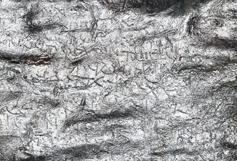

<?xml version="1.0" encoding="UTF-8"?>
<div xmlns="http://www.w3.org/1999/xhtml" class="templates:surround?with=templates/page.html&amp;at=content">
    <div class="row">
        <div class="span3">
            <div class="app:logos">Logos</div>
        </div>
        <div class="span6 offset3">
            <div class="page-header">
                <!-- <h1 class="config:app-title">Generated page</h1> -->
                <h1>Willkommen</h1>
            </div>
            <div class="img right">
                
                <p class="caption">Altgriechischer Fluch, Bleitäfelchen<br/> (Ägypten, 3./4. Jhdt. n. Chr.)</p>
            </div>
            <p>Die <strong>Magie in der griechisch-römischen Welt</strong> ist einer der
            Schwerpunkte der Kölner Papyrologie. Einen Teil der Dokumentation dieses Gebiets
            der antiken Religionsgeschichte liefern die griechischen <strong>Papyri</strong> Ägyptens wie
            z.B. die schon publizierten magischen Texte der <a href="http://www.uni-koeln.de/phil-fak/ifa/NRWakademie/papyrologie/" target="_blank">Kölner Papyrussammlung</a>.</p>
            <p>Daneben
            gibt es magische Texte, die auf <strong>Metalltafeln</strong> eingeritzt sind. Viele solcher noch
            unveröffentlichter Tafeln aus dem Nahen Osten und Zypern sind bei der Israel
            Antiquities Authority, im Princeton University Museum, im British Museum, in der
            Bibliothèque Nationale de France und im Jordanian Department of Antiquities
            aufbewahrt.</p>
            <p>Die Dokumentation und Edition dieser Texte ist Ziel des Projektes
            Magica Levantina, das von der Kölner Papyrologie in Zusammenarbeit mit dem
            <a href="http://www.cceh.uni-koeln.de" target="_blank">Cologne Center for eHumanities (CCeH)</a> durchgeführt wird.</p>
            <p>Es handelt sich meist
            um Flüche, die schwer lesbar und auf Blei eingeritzt sind. Das Entziffern der
            Texte war bisher, wenn überhaupt, nur mit Hilfe eines Mikroskops möglich.
            Herkömmliche Digitalbilder halfen in der Regel nicht weiter. Einen Durchbruch
            bedeutet das <strong>Reflectance Transformation Imaging (RTI)</strong>, ein digitales
            Photoverfahren, durch das kleinste Unebenheiten einer Oberfläche unter
            verschiedenen Lichteinfällen erfasst werden. Die so entstehenden und digital
            amalgamierten Bilder lassen sich mit einer speziellen Software am Bildschirm in
            unterschiedlichsten Verarbeitungsstufen anzeigen. Schriftzüge, die am Original
            unter statischem Lichteinfall kaum oder gar nicht sichtbar sind, werden auf
            diese Weise lesbar.</p>
            <p>Die Objekte für das Projekt Magica Levantina wurden bei
            Ausgrabungen gefunden. Die Kombination von Papyrologie, Epigraphik und
            RTI-Technologie erschließt Funde der Archäologie und liefert neue
            Grundlagen für die Sozial-, Literatur- und Religionsgeschichte.</p>
        </div>
        <div class="span3">
            <div class="sidebar">
                <h4>Project team:</h4>
                <ul>
                    <li>
                    Dr. Robert Daniel<br/>
                        <a href="mailto:robert.daniel@uni-koeln.de">robert.daniel@uni-koeln.de</a>
                        <br/>
                        <a href="http://www.uni-koeln.de/phil-fak/ifa/NRWakademie/papyrologie/anschrift.html" target="_blank">http://www.uni-koeln.de/phil-fak/ifa/NRWakademie/papyrologie/anschrift.html</a>
                    </li>
                    <li>
                    Dr. Alex Hollmann<br/>
                        <a href="mailto:hollmann@u.washington.edu">hollmann@u.washington.edu</a>
                        <br/>
                        <a href="http://classics.washington.edu/people/alexander-hollmann" target="_blank">http://classics.washington.edu/people/alexander-hollmann</a>
                    </li>
                    <li>
                    Dr. Kathryn E. Piquette<br/>
                        <a href="kathryn.piquette@uni-koeln.de">kathryn.piquette@uni-koeln.de</a>
                        <br/>
                        <a href="https://uni-koeln.academia.edu/KathrynEPiquette" target="_blank">https://uni-koeln.academia.edu/KathrynEPiquette</a>
                    </li>
                    <li>
                    Dr. Franz Fischer<br/>
                        <a href="franz.fischer@uni-koeln.de">franz.fischer@uni-koeln.de</a>
                        <br/>
                        <a href="http://www.cceh.uni-koeln.de/mitarbeiter" target="_blank">http://www.cceh.uni-koeln.de/mitarbeiter</a>
                    </li>
                    <li>
                    Ulrike Henny<br/>
                        <a href="ulrike.henny@uni-koeln.de">ulrike.henny@uni-koeln.de</a>
                        <br/>
                        <a href="http://www.cceh.uni-koeln.de/mitarbeiter" target="_blank">http://www.cceh.uni-koeln.de/mitarbeiter</a>
                    </li>
                    <li>
                        Alena Geduldig<br/>
                        <a href="http://www.cceh.uni-koeln.de/mitarbeiter" target="_blank">http://www.cceh.uni-koeln.de/mitarbeiter</a>
                    </li>
                </ul>
                <h4>News:</h4>
                <p>
                    <a href="http://www.cceh.uni-koeln.de/node/553" target="_blank">Köln Alumni grant awarded</a> for digital imaging equipment, June 2014</p>
                <p>Dr. Kathryn E. Piquette @
                    <a href="http://www.linksceem.eu/ls2/news-and-activities/events/events/event/34-reflectance-transformation-imaging-rti-a-cultural-heritage-workshop.html" target="_blank">RTI &amp; Cultural Heritage Workshop</a>, The Cyprus Institute, 3th-5th June 2014: "RTI for Exploring Ancient Writing Materialities: Case studies from the Eastern Mediterranean"
                </p>
                <p>
                    <a href="http://www.cceh.uni-koeln.de/rti" target="blank">RTI workshop</a> at the CCeH, 10th June 2013</p>
                <h4>Contact:</h4>
                <p>Dr. Robert Daniel, <a href="mailto:robert.daniel@uni-koeln.de">robert.daniel@uni-koeln.de</a>
                </p>
            </div>
        </div>
    </div>
</div>